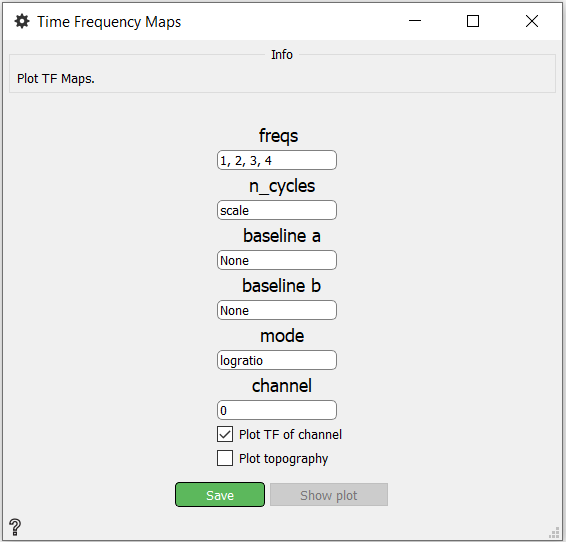
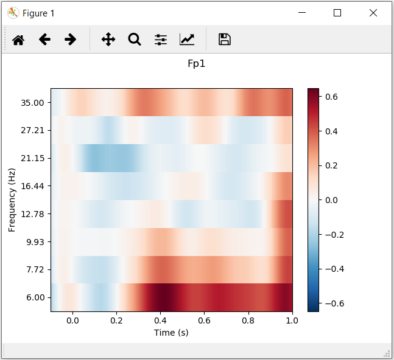

Time Frequency Maps¶
Plot time-frequency maps.
Inputs
Output Time-Frequency Map
Use

freq - The frequencies in Hz.
n_cycles - The number of cycles globally or for each frequency. If n_cycles is ‘scale’ n_cycle = freqs / 2.
baseline a - Start of the time interval to apply baseline correction.
baseline b - End of the time interval to apply baseline correction.
mode - Mode to perform baseline correction. Possibilities:
mean - subtracting the mean of baseline values
ratio - dividing by the mean of baseline values
logratio - dividing by the mean of baseline values and taking the log
percent - subtracting the mean of baseline values followed by dividing by the mean of baseline values
zscore - subtracting the mean of baseline values and dividing by the standard deviation of baseline values
zlogratio - dividing by the mean of baseline values, taking the log, and dividing by the standard deviation of log baseline values
channel - Channel which TF should be ploted
Plot TF of channel - If this check box is checked, the Time-Frequency of channel will be displayed after pressing Show plot.
Plot topography - If this check box is checked, the topography will be displayed after pressing Show plot.
Save button - Saves changes
Show plot button - Button for showing plots.
Example¶



Where Figure 1 is TF of channel and Figure 2 is topography.
More information about plot TF of channel and plot topography. Information about container for Time-Frequency data here.